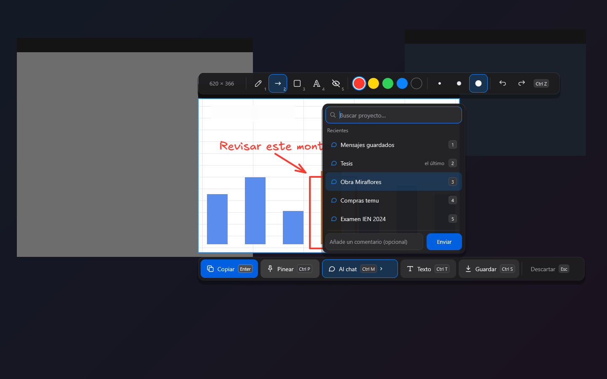

Windows
Para Windows 10 (21H2) y 11. Descarga el ZIP, descomprímelo y abre pixpinmax.exe. Va fluido incluso en equipos modestos.
Tu cuaderno de ingeniería: captura y anota, abre planos y modelos 3D, y ordénalo todo por proyecto. Reúne lo que más me sirvió en la carrera; está pensado para estudiantes AEC y es útil también en obra y oficina.
Elige una función para verla en la app.

Si eres estudiante
Es gratis y no pide crear una cuenta. Elige tu equipo.
Para Windows 10 (21H2) y 11. Descarga el ZIP, descomprímelo y abre pixpinmax.exe. Va fluido incluso en equipos modestos.
Para Android 10 o superior. Descarga el APK y permite instalar apps de origen desconocido cuando el teléfono lo pida.
PixPin Max todavía está en desarrollo: algunas funciones pueden cambiar o fallar. Si algo no va bien o te falta una función, déjanos un comentario; no necesitas cuenta.
31 capítulos para Windows y Android, con capturas, atajos y tu progreso guardado en el navegador.
Agente IA de obra, simulador de inundaciones, memorias de cálculo y más, hechas con la comunidad.